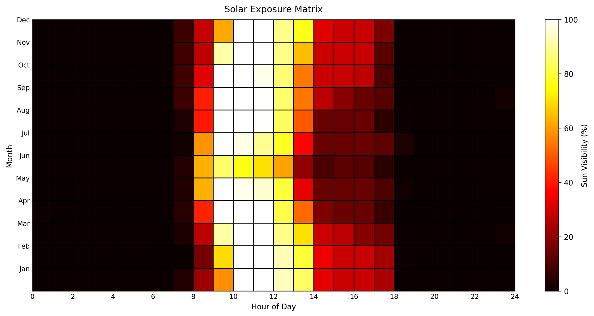
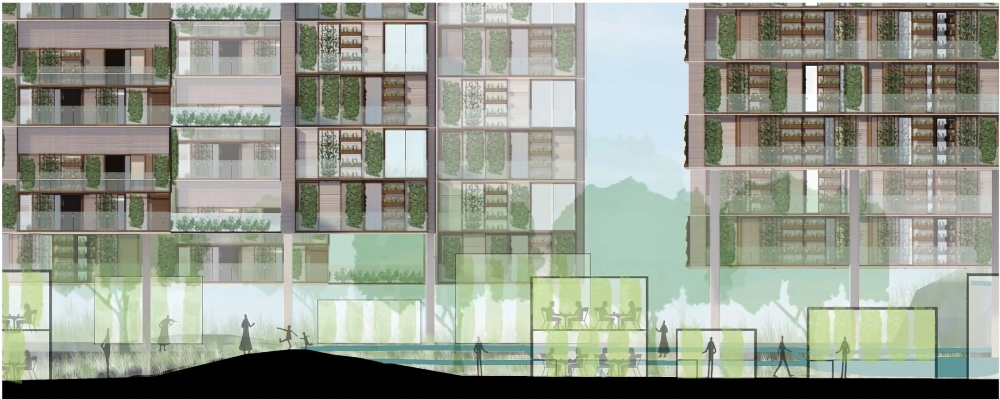

Pedestrian solar exposure
Estimating monthly sun exposure along walking routes from panoramic street-level imagery.
Urban analytics & spatial computing
I specialize in 3D reconstruction of point-cloud environments from 360° images, using street-view imagery (SVI) and both 2D and 3D data to analyze urban space — with architectural training that informs how I read form, light, and movement.
B.A. Architecture, AUPP (2019–2024) · M.Arch, Southeast University, Nanjing (2024–2027)
Estimating monthly sun exposure along walking routes from panoramic street-level imagery.
Downloading, processing, and measuring cities with panoramic and street-view workflows.
Point clouds, panoramas, and localization pipelines after 3D capture and structure-from-motion.
Conference work from 2025 — manuscripts, slides, and abstracts.
34th GISA Annual Conference · 2025 · Toyama, Japan
61st ISOCARP World Planning Congress · 2025 · Riyadh, Saudi Arabia
Research contributions first, then supporting tools. Overviews focus on problem, findings, and contribution — not full method dumps. Last updated 2025.
Turns panoramic street-view sequences into segmented 3D scenes that preserve spatial relations for mid-to-small scale urban analysis.

Maps facade-related debris risk and safer pedestrian zones during seismic events using accessible street-level imagery.

Estimates monthly pedestrian sun exposure along walking routes from panoramic sequences.

Practical street-view download, cleaning, and analysis workflows for urban measurement.
Post-reconstruction tooling for point clouds, panoramas, and localization after 3D capture.
Design training that informs how I read urban space in research.
Drawings, competitions, visualization, and immersive 360° documentation — the spatial literacy behind my urban analytics work.